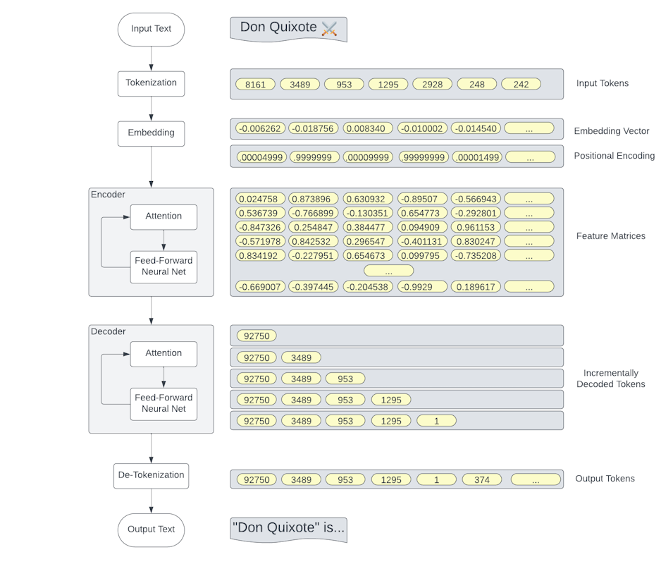
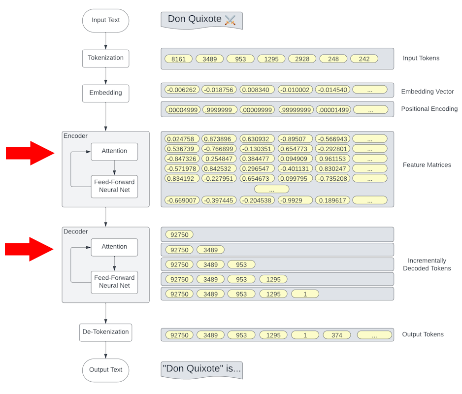
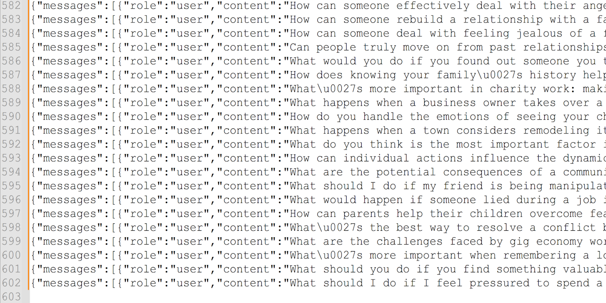
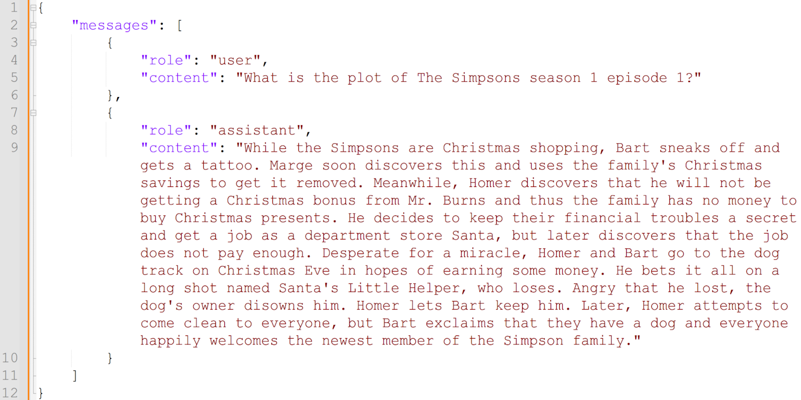
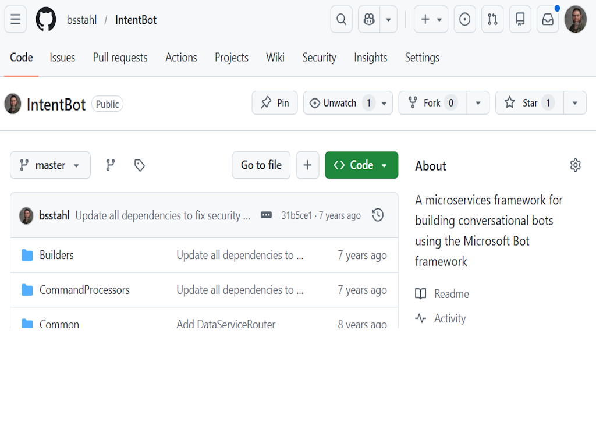
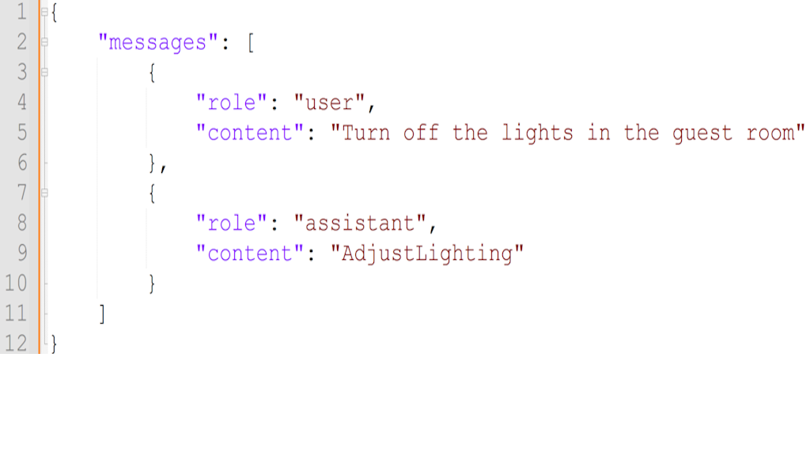

Inside Model ReasoningFine-Tuning in ActionBarry S. StahlSolution Architect & Developer@bsstahl@cognitiveinheritance.comhttps://CognitiveInheritance.com |

|
Favorite Physicists & Mathematicians
Favorite Physicists
Other notables: Stephen Hawking, Edwin Hubble, Leonard Susskind, Christiaan Huygens |
Favorite Mathematicians
Other notables: Daphne Koller, Grady Booch, Leonardo Fibonacci, Evelyn Berezin, Benoit Mandelbrot |
Fediverse Supporter
|

|
Some OSS Projects I Run
- Liquid Victor : Media tracking and aggregation [used to assemble this presentation]
- Prehensile Pony-Tail : A static site generator built in c#
- TestHelperExtensions : A set of extension methods helpful when building unit tests
- Conference Scheduler : A conference schedule optimizer
- IntentBot : A microservices framework for creating conversational bots on top of Bot Framework
- LiquidNun : Library of abstractions and implementations for loosely-coupled applications
- Toastmasters Agenda : A c# library and website for generating agenda's for Toastmasters meetings
- ProtoBuf Data Mapper : A c# library for mapping and transforming ProtoBuf messages
http://GiveCamp.org

Achievement Unlocked

Special thanks to René Magritte
For reminding us that representations are not reality
Fantasy Baseball - Base Model
Fantasy Baseball - Fine-Tuned
Fantasy Baseball - Fine-Tuned
The Simpsons - S7 E8

Last Week on Job - Base Model
Last Week on Job - Fine-Tuned Model
Questions to be Answered
|
What did our Fine-Tuning Do?
|

|
Transformer Architectures
|

|
Transformer (Simplified)
Attention Blocks
Model Differences
|

|
The Pattern Simulates thinking
|
Postponement - Base Model
Postponement - Reasoning Model
Theory of Mind - Base Model
Theory of Mind - Reasoning Model
Fine-Tuning Data
The Data is Not Reinforced
When to Fine-Tune Data
|

|
Fine-Tuning Is for Behavior
We'll look at better ways to adjust the model's knowledge later in this session |
Use Case - IntentBot
|
 |
Use Case - IntentBot
|

|
Classifying Utterances
User: Set the office lights to 40 percent and make them warm white
- Intent: AdjustLighting
User: It's too cold in here, bump the temperature up a couple degrees
- Intent: AdjustClimate
User: What is my current Azure spend for the month?
- Intent: QueryAzureSubscription
User: Mark messages from
marketing@spammer.bizas spam- Intent: ManageEmail
User: Create a placeholder for a blog post called
Fine-Tuning AI Models with Microsoft Foundry- Intent: ManageBlog
User: Add an A record for
api.cuyahogapress.compointing to 192.168.0.0 with a 300‑second TTL- Intent: ManageDns
Adjust Lighting Intent

Adjust Lighting - Guest Room
What If?
|
What if we give the model an utterance that it hasn't been fine-tuned to handle? Will it:
|

|
Ways to Control Model Output
|

|
Static Context Engineering
|
Add tokens to the designed prompt
|
Dynamic Context Engineering
|
Add tokens at runtime
|

|
Fine-Tuning
|
Modify the model’s behavioral priors
|
Constrained Decoding
|
Restrict what tokens the model can produce
|
Post-Generation Validation
|
Reject or correct the output after it's produced
|
IntentBot - The Hybrid Approach
|
Fine-Tuning Data
Key Takeaways
|

|
Call to Action
|